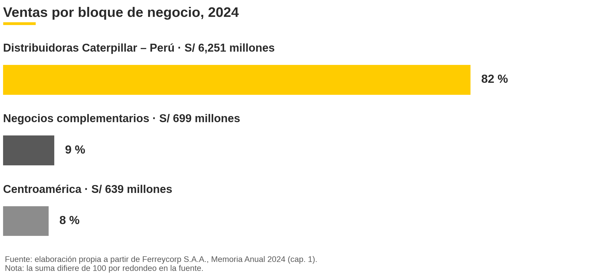
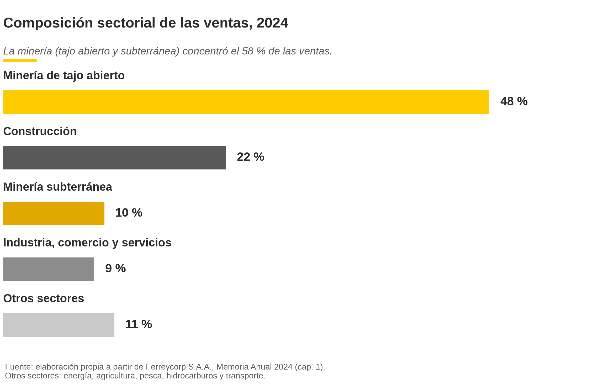

Una empresa se entiende por cómo está organizada por dentro.
Este es el análisis organizacional de Ferreycorp S.A.A. como consultores junior,
con fuentes públicas: su estructura, sus áreas, sus recursos, su diagnóstico y su plan.
El edificio de arriba es la empresa: cada piso, un nivel del organigrama — y cada piso tiene su propia página.
En planta baja vive la maquinaria: dos piezas desarmables, cada una en su escenario — piso, sombra de contacto y luz de estudio. El motor gira y el cargador se articula; el despiece muestra el circuito venta → soporte → repuesto.
El motor V8 de Elvar, el ejemplo completo de la skill teardown: gira a 700 RPM con su orden de encendido 1-8-4-3-6-5-7-2 y se recorre pieza por pieza. Arrastra para orbitar, usa el tour automático, y cambia la vista (HERO · FRONT · SIDE · VALLEY · CYL) o el corte (GLASS · SECTION · SOLID). Pulsa H dentro del visor para ocultar los datos.
Fuente: ejemplo original de la skill teardown (Elvar, MIT) — la copia solo añade la flechita para plegar el panel; el original sigue intacto.
Cargador de ruedas CAT WL-2 — ensamblaje R2 de JEFE-2
El cargador de JEFE-2: 1 792 componentes en 8 grupos, con la cinemática cerrada (auditoría del cazador: 0 errores, sin colisiones). Articulación ±35°, levante 0–45°, inclinación −10°…+40° y despiece en 10 pasos, con botones DEMO, CINE y CÁMARA AUTO. El panel arranca plegado y se abre con la flechita dorada del borde.
Fuente: cuartel, jefe-2/entregas/ferreycorp-web/CARGADOR-v2-ENSAMBLAJE-R2.html (commit 68aa3b8) — la copia solo añade la flechita para plegar el panel; el original sigue intacto.
1 · La empresa
102 años creando desarrollo.
Ferreycorp S.A.A. es una gran empresa peruana, comercial y de servicios,
privada y de capital difundido, con fines de lucro y forma de sociedad anónima abierta.
Representante único de Caterpillar en el Perú desde 1942, vende máquinas, motores y equipos,
y convierte cada venta en un flujo recurrente de repuestos y servicios.
S/ 7 590 Mventas 2024 · +8,5 %7 978colaboradores · 1 614 mujeres (20 %)10 paísesPerú y 9 operaciones fuera6 997accionistas · ninguno con más del 10 %
Fuente: §1.1, p. 5 · §1.3, p. 8 · Anexo 2, p. 40.
2 · Estructura
Un holding divisional, una doble concentración.
La matriz fija la estrategia y asigna los recursos; las subsidiarias operan con
autonomía; un centro de servicios compartidos estandariza el apoyo. La autoridad fluye por
niveles claros —Junta, Directorio, Gerencia General, gerencias corporativas y subsidiarias— y
la coordinación se refuerza con directorios cruzados, comités y objetivos alineados en cascada.
La tesis del edificio: la doble concentración es fortaleza y riesgo a la vez.
77 %Caterpillar de los ingresos58 %minería de las ventas82 %Perú CAT y aliadas · S/ 6 251 M8 %exterior · S/ 639 M9 %complementarios · S/ 699 M

Figura 2 · Bloques de subsidiarias por ventas 2024. Perú CAT y aliadas 82 % · exterior 8 % · complementarios 9 % (los bloques suman 99 % por redondeo). Fuente: informe AA1, p. 14.
3 · Áreas funcionales
Ocho áreas, un solo circuito.
Las áreas no se entienden una por una, sino por sus circuitos: el comercial–posventa–logística
convierte cada venta de máquinas en un flujo recurrente de repuestos y servicios.
Comercial / ventasMáquinas, motores y equipos nuevos y usados, y alquiler — Gran Minería, Cuentas Nacionales, Regionales y Energía.
Soporte al productoPosventa: repuestos, servicio técnico y reconstrucción — el negocio recurrente, 53 % de las ventas en 2025.
Logística y cadena2 CRC de clase mundial (Lima y La Joya) · centro de distribución automatizado · inventarios S/ 2 509 M.
Finanzas y administraciónDeuda neta/EBITDA 1,90 (2023: 2,25) · 43 % de la deuda a largo plazo.
Recursos humanos99,7 % de evaluación · 286 913 h de capacitación · ThinkBIG 107 en 2024.
Tecnología e innovaciónCiberseguridad al 100 % · >6 500 máquinas conectadas · Innovation Week >600.
Marketing y comunicacionesRepuestos digitales >US$ 100 M · 62 % de clientes online · lanzó Maquinet.
Gobierno corporativoAsuntos corporativos, auditoría y cumplimiento — ISO 37001 en 8 empresas.
Fuente: §1.5, pp. 15–17.
4 · Recursos
La red que sostiene la máquina.
La ventaja competitiva no nace de un solo recurso, sino de su combinación:
representación exclusiva, red de soporte de clase mundial, talento técnico residente,
logística automatizada y capital reputacional.
>40sucursales entre las tres distribuidoras peruanas2 CRCde clase mundial · más de 50 000 m²15talleres Cinco Estrellas~1 700técnicos residentes en las minas>6 500máquinas conectadasS/ 2 509 Minventarios · rotación 154 días
Fuente: §1.6, pp. 19–22.
5 · Diagnóstico
Seis fortalezas, cinco debilidades.
Fortalezas
F1 · Liderazgo con representación exclusiva. Único de Caterpillar en el Perú desde 1942 · 43 % de la marca en importaciones FOB.
F2 · Negocio recurrente de repuestos y servicios. La línea de mayor margen · 53 % de las ventas en 2025.
F3 · Red de soporte de clase mundial. 2 CRC certificados · centro de distribución automatizado · >40 sucursales.
F4 · Solidez financiera. Récord de ventas y utilidad · EBITDA S/ 1 131 M (+18,9 %) · deuda neta/EBITDA 1,90.
F5 · Capital humano comprometido. Clima 83 % · compromiso 88 % · 286 913 h de capacitación.
F6 · Gobierno corporativo e intangibles. Directorio plural · DJSI MILA 8 años · calificación Oro de Caterpillar.
Debilidades
D1 · Concentración sectorial. La minería concentró el 58 % de las ventas de 2024.
D2 · Dependencia de una representada. Caterpillar equivale al 77 % de los ingresos.
D3 · Sensibilidad cambiaria. Pérdida por diferencia de cambio de S/ 43 M en 2024 · gasto financiero +12,5 %.
D4 · Complementarios desiguales. El bloque cayó 2,0 % en 2024 — el pensado para diversificar fue el de menor dinamismo.
D5 · Presión competitiva por precio. Maquinaria china desde 2008 · repuestos no genuinos en la posventa.

Figura 4 · Composición sectorial de las ventas 2024. Minería 58 % — tajo abierto 48 % · construcción 22 % · subterránea 10 % · industria, comercio y servicios 9 %. Fuente: informe AA1, p. 26.
Fuente: §1.8, pp. 25–27.
6 · Plan de acción
Reducir la vulnerabilidad, sin soltar el liderazgo.
Objetivo general: reducir la vulnerabilidad frente a la doble concentración
en un horizonte de tres años, elevando el peso de los ingresos recurrentes y de los sectores
y negocios no mineros, sin sacrificar el liderazgo en la gran minería.
Venta cruzada one stop shopPrograma corporativo con metas por subsidiaria y tablero de clientes compartidos — 0–12 meses.
Contratos de servicio recurrentesConvertir el parque de máquinas conectadas en CVA con monitoreo predictivo y gemelos digitales — 6–24 meses.
Electrificación y reconstrucción certificadaElectrification Rebuild Center y CRC como línea comercial activa para flotas en transición energética — 6–36 meses.
Crecimiento sectorial no mineroMetas de participación para energía, agricultura e infraestructura, con equipos comerciales dedicados — 12–36 meses.
Blindaje financiero permanenteCalce de monedas, coberturas cambiarias y al menos 40 % de deuda a largo plazo — permanente, con revisión anual.
Ampliar la cantera técnicaThinkBIG, DreamBIG y Aprendizaje Dual según la demanda de técnicos, priorizando regiones mineras — 0–36 meses.
Fuente: §1.9.3, Tabla 2, pp. 28–30.
7 · Conclusiones
Seis ideas que quedan.
Gran empresa peruana, comercial y de servicios, privada, S.A.A. con fines de lucro. Su clasificación determina su supervisión por la SMV, su disciplina de gobierno y la transparencia que hace posible analizarla con fuentes públicas.
Holding divisional por productos-mercado, con autonomía operativa y coherencia estratégica. La autoridad fluye Junta → Directorio → Gerencia General → gerencias → subsidiarias, reforzada por directorios cruzados y objetivos en cascada.
Las áreas forman un sistema, no una lista. El circuito comercial–posventa–logística convierte cada venta en flujo recurrente, sostenido por talento formado en casa y más de 6 500 máquinas conectadas.
Relaciones internas medidas y consistentes: clima 83 %, compromiso 88 %, respuesta de 99 % a la encuesta, y una cultura centenaria con manifestaciones verificables en integridad y equidad.
La dificultad central es la doble concentración —minería 58 % y Caterpillar 77 %—, fuente de su liderazgo y principal vulnerabilidad, agravada por la sensibilidad cambiaria y el retroceso del bloque complementario.
El plan afronta esa dificultad con las fortalezas propias —negocio recurrente, red certificada, solidez financiera y cantera técnica—, en seis acciones con responsables, plazos e indicadores, en tres años.